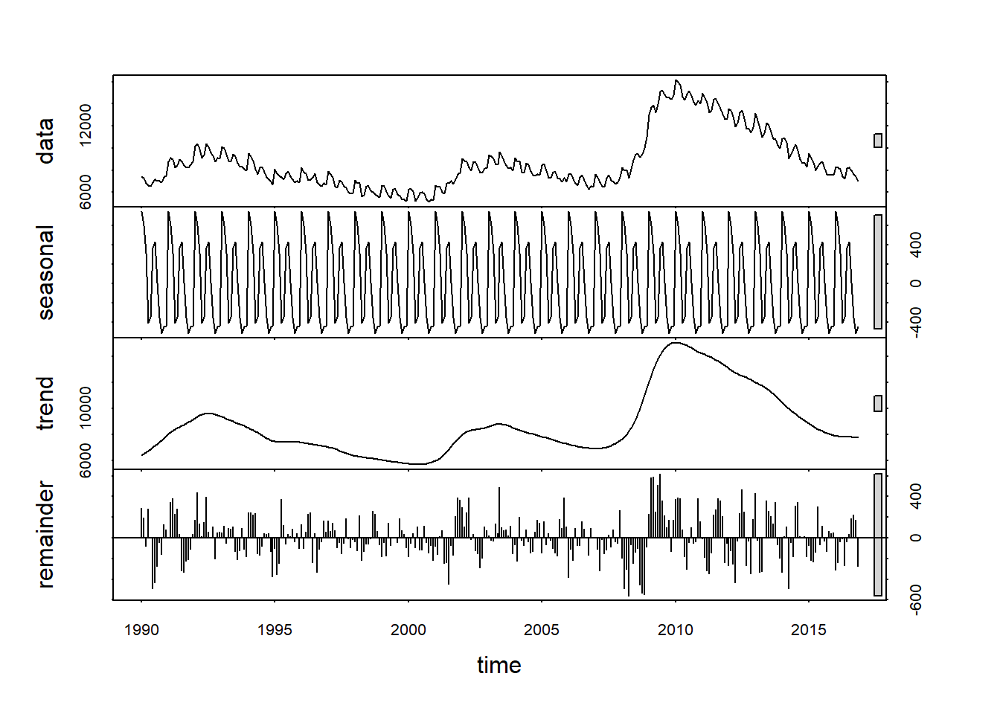
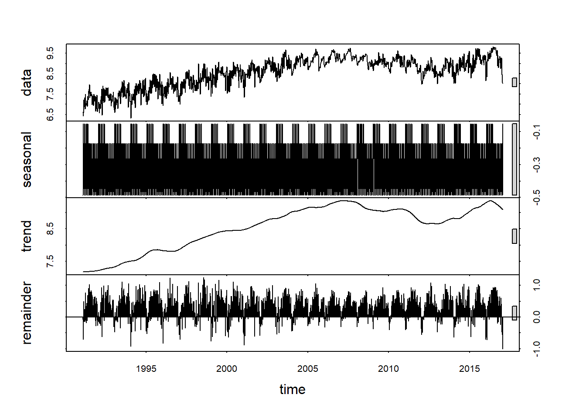

4 時系列データ操作
第4章「時系列データ操作」では、時系列データに特有のデータ操作方法について解説します。時系列データ特有の操作とは、変化率やラグなどのデータ変換、日次・月次などの頻度変換、季節調整、トレンド推定などです。
Rで時系列データを扱う方法には、主に次の2つがあります。
まず、第3章で使用したtibble形式です。tibble形式は複数の列を含むデータフレームの形状をしており、データそのものを格納する列と、日付型データを格納する列を組み合わせることで、時系列データを扱うことができます。
もう一つはts型です。ts型はデータと日付があらかじめセットになった一次元のデータ構造で、季節調整を行うseasonalパッケージなどで使用されます。
4.1 第4章の準備
4.2 データ変換
ここでは、時系列データのラグ・リード系列、変化率、移動平均を計算する方法を解説します。
まず、Our World in Dataのdata_owidデータセットから使用するサンプルデータを作成します。
data_owid_jp <- data_owid %>%
dplyr::select(location, date, new_cases, new_deaths) %>%
dplyr::filter(location == "Japan",
date >= "2022-01-01")ラグ・リード系列の作成
dplyr::lag()関数とdplyr::leag()関数で、既存の列のラグ・リード系列を作成します。
# 1期ラグの系列を追加
data_owid_jp %>%
dplyr::mutate(new_cases_lag = dplyr::lag(new_cases, n = 1)) ## # A tibble: 176 x 5
## location date new_cases new_deaths new_cases_lag
## <chr> <date> <dbl> <dbl> <dbl>
## 1 Japan 2022-01-01 456 0 NA
## 2 Japan 2022-01-02 477 2 456
## 3 Japan 2022-01-03 672 1 477
## 4 Japan 2022-01-04 1149 1 672
## 5 Japan 2022-01-05 2490 1 1149
## 6 Japan 2022-01-06 4297 1 2490
## 7 Japan 2022-01-07 6070 1 4297
## 8 Japan 2022-01-08 8302 2 6070
## 9 Japan 2022-01-09 8071 1 8302
## 10 Japan 2022-01-10 6265 2 8071
## # ... with 166 more rows変化率系列の作成
dplyr::lag()関数で、既存の列の変化率系列を作成します。
# 前期比変化率（％表示）の系列を追加
data_owid_jp %>%
dplyr::mutate(new_cases_chg = 100 * (new_cases / dplyr::lag(new_cases, n = 1) - 1)) ## # A tibble: 176 x 5
## location date new_cases new_deaths new_cases_chg
## <chr> <date> <dbl> <dbl> <dbl>
## 1 Japan 2022-01-01 456 0 NA
## 2 Japan 2022-01-02 477 2 4.61
## 3 Japan 2022-01-03 672 1 40.9
## 4 Japan 2022-01-04 1149 1 71.0
## 5 Japan 2022-01-05 2490 1 117.
## 6 Japan 2022-01-06 4297 1 72.6
## 7 Japan 2022-01-07 6070 1 41.3
## 8 Japan 2022-01-08 8302 2 36.8
## 9 Japan 2022-01-09 8071 1 -2.78
## 10 Japan 2022-01-10 6265 2 -22.4
## # ... with 166 more rows移動平均系列の作成
zooパッケージのrollmean()関数で、移動平均系列を作成します。
# 後方7日移動平均の系列を追加
data_owid_jp %>%
dplyr::mutate(new_cases_7dma = zoo::rollmean(new_cases, # 移動平均を作成するもとの系列名
k = 7, # 移動平均の期間
na.pad = TRUE, # 系列の先端部分で移動平均を計算できない箇所をNAで埋めるか
align = "right")) # left：前方移動平均、center：中央移動平均、right：後方移動平均## # A tibble: 176 x 5
## location date new_cases new_deaths new_cases_7dma
## <chr> <date> <dbl> <dbl> <dbl>
## 1 Japan 2022-01-01 456 0 NA
## 2 Japan 2022-01-02 477 2 NA
## 3 Japan 2022-01-03 672 1 NA
## 4 Japan 2022-01-04 1149 1 NA
## 5 Japan 2022-01-05 2490 1 NA
## 6 Japan 2022-01-06 4297 1 NA
## 7 Japan 2022-01-07 6070 1 2230.
## 8 Japan 2022-01-08 8302 2 3351
## 9 Japan 2022-01-09 8071 1 4436.
## 10 Japan 2022-01-10 6265 2 5235.
## # ... with 166 more rows4.3 時系列データの頻度変換
tidyverseと整合性がある金融時系列データ分析用のtidyquantパッケージに含まれるtq_transmute()関数を用いて、時系列データの頻度変換（高頻度データから低頻度データへの変換）を行います。
なお、tidyquantは頻度変換以外にも様々な分析機能があります。詳しくは公式ウェブサイトを参照してください。
まず、Our World in Dataのdata_owidデータセットから、使用するサンプルデータを作成します。tq_transmute()関数に入力する時系列データは、原則として横型データである点に留意してください。
# サンプルデータ（日次）
data_owid_cases_wide <- data_owid %>%
dplyr::select(location, date, new_cases) %>%
dplyr::filter(date >= "2021-01-01") %>%
dplyr::arrange(date) %>%
tidyr::pivot_wider(id_cols = "date", names_from = "location", values_from = "new_cases")日次データを週次データに変換
tidyquant::tq_transmute()関数を使用して日次データを週次データに変換すると、月曜～日曜のデータがFUNに指定した関数で集計され、日曜の日付で記録されます。
data_owid_cases_wide %>%
tidyquant::tq_transmute(select = -date, mutate_fun = apply.weekly, FUN = mean, na.rm = TRUE)## # A tibble: 78 x 245
## date Afghanistan Africa Albania Algeria Andorra Angola Anguilla
## <date> <dbl> <dbl> <dbl> <dbl> <dbl> <dbl> <dbl>
## 1 2021-01-03 126. 24211. 374 266 47.7 29.7 0.667
## 2 2021-01-10 111. 31857. 594. 248 56.3 78.7 0
## 3 2021-01-17 70.7 29727. 585 241. 71 97.4 0
## 4 2021-01-24 87.3 25102. 655. 252. 66.6 74.9 0
## 5 2021-01-31 61.1 18531. 836. 249 55.4 56.7 0.143
## 6 2021-02-07 44.6 14379. 1030. 250. 44.9 41.4 0.143
## 7 2021-02-14 22.4 11848. 1106. 232. 36 40 0.143
## 8 2021-02-21 16 10877. 1024. 172. 28 21.9 0
## 9 2021-02-28 15.7 9707. 989. 168. 23.9 41.1 0
## 10 2021-03-07 19 9535. 819. 163. 25.1 39.9 0
## # ... with 68 more rows, and 237 more variables: `Antigua and Barbuda` <dbl>,
## # Argentina <dbl>, Armenia <dbl>, Aruba <dbl>, Asia <dbl>, Australia <dbl>,
## # Austria <dbl>, Azerbaijan <dbl>, Bahamas <dbl>, Bahrain <dbl>,
## # Bangladesh <dbl>, Barbados <dbl>, Belarus <dbl>, Belgium <dbl>,
## # Belize <dbl>, Benin <dbl>, Bermuda <dbl>, Bhutan <dbl>, Bolivia <dbl>,
## # `Bonaire Sint Eustatius and Saba` <dbl>, `Bosnia and Herzegovina` <dbl>,
## # Botswana <dbl>, Brazil <dbl>, `British Virgin Islands` <dbl>, ...なお、日曜～土曜のデータを集計し日曜の日付で記録したい場合は、rollmean()関数を使用して前方7日移動平均を計算し、日曜の値を抽出します。
data_owid_cases_wide %>%
dplyr::mutate(across(-date, rollmean, k = 7, na.pad = TRUE, align = "left")) %>%
dplyr::filter(lubridate::wday(date) == 1)## # A tibble: 77 x 245
## date Afghanistan Africa Albania Algeria Andorra Angola Anguilla
## <date> <dbl> <dbl> <dbl> <dbl> <dbl> <dbl> <dbl>
## 1 2021-01-03 116. 30479 577. 251. 60 78.3 0.286
## 2 2021-01-10 76.9 30443. 598. 243. 64.6 87 0
## 3 2021-01-17 88.7 26023. 604. 251. 65.9 86 0
## 4 2021-01-24 64.1 19162. 830 250. 55.1 59.3 0.143
## 5 2021-01-31 46 14925. 994. 215. 45.9 40 0.143
## 6 2021-02-07 20.4 12066. 1111. 269. 36.7 38.1 0.143
## 7 2021-02-14 15.3 11007. 1011. 179. 29.9 24.3 0
## 8 2021-02-21 18.1 9721. 1022. 171. 25.3 40.4 0
## 9 2021-02-28 19 9670. 838. 163. 24.3 39 0
## 10 2021-03-07 17 10201. 678. 148. 29.9 38.3 0.429
## # ... with 67 more rows, and 237 more variables: `Antigua and Barbuda` <dbl>,
## # Argentina <dbl>, Armenia <dbl>, Aruba <dbl>, Asia <dbl>, Australia <dbl>,
## # Austria <dbl>, Azerbaijan <dbl>, Bahamas <dbl>, Bahrain <dbl>,
## # Bangladesh <dbl>, Barbados <dbl>, Belarus <dbl>, Belgium <dbl>,
## # Belize <dbl>, Benin <dbl>, Bermuda <dbl>, Bhutan <dbl>, Bolivia <dbl>,
## # `Bonaire Sint Eustatius and Saba` <dbl>, `Bosnia and Herzegovina` <dbl>,
## # Botswana <dbl>, Brazil <dbl>, `British Virgin Islands` <dbl>, ...日次データを月次データに変換
tidyquant::tq_transmute()関数を使用して日次データを月次データに変換すると、月初～月末のデータがFUNに指定した関数で集計され、月末の日付で記録されます。
data_owid_cases_wide %>%
tidyquant::tq_transmute(select = -date, mutate_fun = apply.monthly, FUN = mean, na.rm = TRUE)## # A tibble: 18 x 245
## date Afghanistan Africa Albania Algeria Andorra Angola Anguilla
## <date> <dbl> <dbl> <dbl> <dbl> <dbl> <dbl> <dbl>
## 1 2021-01-31 86.9 26102. 639. 249. 60.9 72.4 0.0968
## 2 2021-02-28 24.7 11703. 1037. 205. 33.2 36.1 0.0714
## 3 2021-03-31 23.9 10321. 580. 132. 36.9 48.5 0.226
## 4 2021-04-30 110. 11347. 198. 164. 40.7 145. 2.27
## 5 2021-05-31 390. 9119. 39.7 220. 16.0 255. 0.516
## 6 2021-06-30 1561. 22139. 6.87 357. 6.13 143. 0
## 7 2021-07-31 919. 38865. 18.1 1025. 24.7 127. 0.129
## 8 2021-08-31 196. 34873. 429. 796. 11.5 154. 3.35
## 9 2021-09-30 65.1 17350. 791. 243. 6.3 301. 6.4
## 10 2021-10-31 34.7 6251. 489. 99.8 9.48 253. 17.3
## 11 2021-11-30 34.6 5468. 488. 136. 53.3 24.5 14.7
## 12 2021-12-31 25.6 34489. 332. 255. 214. 530. 9.29
## 13 2022-01-31 162. 36481. 1559. 1087. 394. 533 21.0
## 14 2022-02-28 383. 15932. 465 458. 72.9 22.3 8.25
## 15 2022-03-31 132. 7282. 68.2 23.7 65.3 13.8 4.68
## 16 2022-04-30 37.7 3801. 47.7 3.63 44.2 3.93 2.93
## 17 2022-05-31 47.4 6860. 32.1 3.35 49.8 15.3 13.4
## 18 2022-06-25 69 5549. 108. 5.84 40 0 8.32
## # ... with 237 more variables: `Antigua and Barbuda` <dbl>, Argentina <dbl>,
## # Armenia <dbl>, Aruba <dbl>, Asia <dbl>, Australia <dbl>, Austria <dbl>,
## # Azerbaijan <dbl>, Bahamas <dbl>, Bahrain <dbl>, Bangladesh <dbl>,
## # Barbados <dbl>, Belarus <dbl>, Belgium <dbl>, Belize <dbl>, Benin <dbl>,
## # Bermuda <dbl>, Bhutan <dbl>, Bolivia <dbl>,
## # `Bonaire Sint Eustatius and Saba` <dbl>, `Bosnia and Herzegovina` <dbl>,
## # Botswana <dbl>, Brazil <dbl>, `British Virgin Islands` <dbl>, ...日次データを四半期データに変換
tidyquant::tq_transmute()関数を使用して日次データを四半期データに変換すると、期初～期末のデータがFUNに指定した関数で集計され、期末の日付で記録されます。
data_owid_cases_wide %>%
tidyquant::tq_transmute(select = -date, mutate_fun = apply.quarterly, FUN = mean, na.rm = TRUE)## # A tibble: 6 x 245
## date Afghanistan Africa Albania Algeria Andorra Angola Anguilla
## <date> <dbl> <dbl> <dbl> <dbl> <dbl> <dbl> <dbl>
## 1 2021-03-31 45.8 16187. 743. 195. 44.0 52.9 0.133
## 2 2021-06-30 684. 14146. 80.9 247. 20.9 182. 0.923
## 3 2021-09-30 397. 30504. 409. 693. 14.2 193. 3.26
## 4 2021-12-31 31.6 15510. 436. 164. 92.6 272. 13.8
## 5 2022-03-31 221 20031. 705. 525. 181. 195. 11.4
## 6 2022-06-25 50.3 5411. 59.5 4.17 45.2 6.88 8.27
## # ... with 237 more variables: `Antigua and Barbuda` <dbl>, Argentina <dbl>,
## # Armenia <dbl>, Aruba <dbl>, Asia <dbl>, Australia <dbl>, Austria <dbl>,
## # Azerbaijan <dbl>, Bahamas <dbl>, Bahrain <dbl>, Bangladesh <dbl>,
## # Barbados <dbl>, Belarus <dbl>, Belgium <dbl>, Belize <dbl>, Benin <dbl>,
## # Bermuda <dbl>, Bhutan <dbl>, Bolivia <dbl>,
## # `Bonaire Sint Eustatius and Saba` <dbl>, `Bosnia and Herzegovina` <dbl>,
## # Botswana <dbl>, Brazil <dbl>, `British Virgin Islands` <dbl>, ...4.4 季節調整（X-13）
ここでは、seasonalパッケージを用いた時系列データへの季節調整方法について解説します。
seasonalパッケージでは、米国商務省センサス局が開発したX-13ARIMA-SEATSを用いて、ts型の月次データ、四半期データ、半期データに対し季節調整を適用することができます。
seasonalパッケージや、X-13ARIMA-SEATSの詳細については、Sax & Eddelbuettel（2018）や、奥本（2016）を参照してください。
サンプルデータとして、ts型データであるseasonal::unempデータセットを用い、seasonalパッケージの使用方法を確認します。
X-13ARIMA-SEATSの実施方法
seasonalパッケージでは、seas()関数を使用してts型データにX-13ARIMA-SEATSを適用します。seas()関数は、季節調整の結果を格納したseas型のオブジェクトを返します。
# seas()関数で季節調整を実行
m <- seasonal::seas(x = seasonal::unemp)
# 季節調整の結果を出力
summary(m)##
## Call:
## seasonal::seas(x = seasonal::unemp)
##
## Coefficients:
## Estimate Std. Error z value Pr(>|z|)
## AR-Nonseasonal-01 0.94360 0.03441 27.43 <2e-16 ***
## MA-Nonseasonal-01 0.82540 0.05654 14.60 <2e-16 ***
## MA-Seasonal-12 0.85071 0.03362 25.30 <2e-16 ***
## ---
## Signif. codes: 0 '***' 0.001 '**' 0.01 '*' 0.05 '.' 0.1 ' ' 1
##
## SEATS adj. ARIMA: (1 1 1)(0 1 1) Obs.: 323 Transform: none
## AICc: 4324, BIC: 4339 QS (no seasonality in final): 0
## Box-Ljung (no autocorr.): 22.04 Shapiro (normality): 0.9946plot()関数で、原数値と季節調整値のグラフを作成できます。黒色の線が原数値、赤色の線が季節調整値です。外れ値がある場合はグラフ中に外れ値が表示されます。
plot(m)
季節調整値を出力するには、seasonal::final()関数を使用します。
# 季節調整値をunemp_saに格納
unemp_sa <- seasonal::final(m)
# unemp_saの折れ線グラフを作成
plot(unemp_sa, type = "l")
monthplot()関数を使用すると、季節変動（Seasonal component）と不規則変動（Seasonal irregular component）を月別に確認することができます。
monthplot(m)
実例：月次データの季節調整
ここでは、日本の産業別就業者数データセットdata_laborに対し、月次の季節調整を適用します。data_laborはtibble形式のデータフレームの中に、日付型の列と、複数の数値型のデータの列を格納したものです。
- tibble形式のデータフレームに格納されている数値型データをts型データに変換する
- tibble形式のデータフレームをリスト形式に変換する
pblapply()で一括してseas()関数の季節調整を適用する。季節調整エラーはtry()関数で処理する- 季節調整エラーを取得する
- 季節調整値を取得する
- エラーが生じた系列は原数値を取得する
# data_laborから一部を抽出
data_labor_nsa <- data_labor %>%
dplyr::select(date, `総数`, `製造`, `情報通信`)
# 数値型データをts型データに変換
data_labor_ts <- data_labor_nsa %>%
dplyr::select(-date) %>%
ts(frequency = 12, # 月次データの場合は12を指定
start = c(lubridate::year(data_labor$date[1]), lubridate::month(data_labor$date[1]))) # データ開始年月を指定
# tibble形式をリスト形式に変換
data_labor_ts %<>%
as.list()
# pblapply()関数で一括してseas()関数の季節調整を適用
# 季節調整でエラーが発生する可能性があるため、try()関数でエラー処理を行う
result <- pblapply(data_labor_ts,
function(e) try(suppressMessages(seas(e, transform.function = "auto")),
silent = TRUE))
# 季節調整エラーを取得
result_iserror <- sapply(result, class) == "try-error"
# 季節調整値を取得し、tibble形式データフレームのdata_labor_saに格納
data_labor_sa <- do.call(cbind, lapply(result[!result_iserror], final)) %>%
tibble::as_tibble() %>%
dplyr::bind_cols(data_labor[, 1], .)
# エラーが生じた系列は原数値を取得してdata_labor_saに追加
for (col in which(result_iserror)) {
data_labor_sa <- data_labor[, names(result[col])] %>%
dplyr::bind_cols(data_labor_sa)
}
# data_labor_saの列をdata_labor_nsaの列順で並べ替え
data_labor_sa %<>%
dplyr::select(all_of(names(data_labor_nsa)))個別系列の季節調整結果を可視化するには、plot()関数を使用します。一部の系列は季節性がないと判断されるため、季節調整が行われていません。
plot(result[[which(names(result) == "総数")]])
plot(result[[which(names(result) == "製造")]])plot(result[[which(names(result) == "情報通信")]])4.5 季節調整（STL分解）
上で紹介したX-13ARIMA-SEATSは、月次データ、四半期データ、半期データに適用できますが、週次データや日次データには適用できません。そこで、週次データや日次データの季節調整を行うためにstatsパッケージのstl()関数によるSTL分解を使用します。
STL分解とは、Seasonal Decomposition of Time Series by Loessの略で、時系列データを季節変動、トレンド変動、不規則変動に分解する手法です。
STL分解の実施方法
STL分解を行うには、ts型の時系列データに対し、statsパッケージのstl()関数を適用します。stl()関数はSTL分解の結果を格納したstl型のオブジェクトを返します。
# stl()関数でSTL分解を実行
m <- stats::stl(x = seasonal::unemp,
s.window = "periodic")
# STL分解の結果を可視化
plot(m)
季節調整値を出力するには、stl()関数が返すstl型オブジェクトに格納されているtime.seriesにアクセスします。time.seriesには、季節変動（seasonal）、トレンド変動（trend）、不規則変動（remainder）の順番にデータが格納されています。
# 季節調整値（トレンド）をunemp_saに格納
unemp_sa <- m$time.series[, "trend"]
# unemp_saの折れ線グラフを作成
plot(unemp_sa, type = "l")
週次データのSTL分解
STL分解は、seasonal::unempのような月次データだけでなく、より高頻度なデータにも適用できるのが特徴です。
ここでは、週次データであるfpp2::gasolineデータセットに対し、STL分解を適用します。週次データはts()関数におけるfrequency引数が52.18となっています。これは、うるう年を考慮した1年の平均日数365.25日を7で割った値であり、週次データは一周期が52.18週であることを示しています。
# データの確認
head(fpp2::gasoline)## Time Series:
## Start = 1991.1
## End = 1991.19582477755
## Frequency = 52.1785714285714
## [1] 6.621 6.433 6.582 7.224 6.875 6.947# データの可視化
plot(fpp2::gasoline)
# stl()関数でSTL分解を実行
m <- stats::stl(x = fpp2::gasoline,
s.window = "periodic")
# STL分解の結果を可視化
plot(m)
日次データのSTL分解（単一周期）
さらに、STL分解は日次データにも適用可能です。日次データの周期性は通常、週、月、年の3種類あると考えられます。ただし、ts型では一種類の周期性しか指定できないため、ここでは週を一周期に設定し、ts()関数のfrequency引数に7を指定して、STL分解を行います。
使用するデータは、Our World in Dataのdata_owidデータセットにおける、日本の新規感染者数です。
# data_owidから日本の新規感染者数（日次）を抽出
data_cases_jp <- data_owid %>%
dplyr::filter(location == "Japan") %>%
tidyr::drop_na(new_cases) %>%
dplyr::pull(new_cases)
# 1週＝7日の周期を設定したts型データに変換
data_cases_jp_ts <- data_cases_jp %>%
ts(start = c(2020, 1, 22),
frequency = 7)
# STL分解の結果をmに格納
m <- stats::stl(x = data_cases_jp_ts,
s.window = "periodic")
# STL分解の結果を可視化
plot(m)
日次データのSTL分解（複数周期）
データに複数の周期性を設定したい場合は、ts型の拡張版であるmsts型データを用います。msts型データはforecastパッケージのmsts()関数で作成できます。
ここでは、日次データに対し、1週間＝7日と、1年＝365.25日の2種類の周期性を設定しています。
msts型データに対するSTL分解は、stats::stl()関数ではなく、forecastパッケージのmstl()関数を使用します。
# data_owidから日本の新規感染者数（日次）を抽出
data_cases_jp <- data_owid %>%
dplyr::filter(location == "Japan") %>%
tidyr::drop_na(new_cases) %>%
dplyr::pull(new_cases)
# 1週間＝7日と1年＝365.25日の周期を設定したmsts型データに変換
data_cases_jp_msts <- data_cases_jp %>%
forecast::msts(seasonal.period = c(7, 365.25),
start = c(2020, 1, 22))
# STL分解の結果をmに格納
m <- forecast::mstl(x = data_cases_jp_ts, s.window = "periodic")
# STL分解の結果を可視化
plot(m)4.6 トレンド推定
seasonalパッケージのサンプルデータセットunemp（米国の失業者数、原数値）を対象に、トレンド推定を行う方法を解説します。
HPフィルタ
HPフィルタ（Hodrick Prescott Filter）は、時系列データのトレンド成分と循環成分を推定する手法です。
具体的には、時系列データがトレンド成分\(g_t\)と循環成分\(c_t\)で構成されると仮定し、次の式のように、全期間を通して「循環成分の2乗の総和」と「トレンド成分の2階階差の2乗の総和」の加重和が最小になるような\(g_t\)を計算します。
ここで、\(\lambda\)はトレードオフの関係にある2つの項にウェイトをつける調整パラメータです。\(\lambda\)が大きいほどトレンド成分が直線に近く、\(\lambda\)が小さいほどトレンド成分が元のデータに近くなります。一般的に、四半期データには\(\lambda = 1600\)が、月次データには\(\lambda = 14400\)が使用されます。
\[ \min \Bigg\{ \sum_{t=1}^{T}{c_t^2} + \lambda \sum_{t=1}^{T}[(g_t - g_{t-1})-(g_{t-1}-g_{t-1})]^2 \Bigg\} \]
HPフィルタを適用するには、時系列データに対し、mFilterパッケージのhpfilter()関数を使用します。データ型は数値型ベクトル、ts型どちらでもOKです。
推定したトレンド成分、循環成分は、推定結果を格納したオブジェクトに、それぞれtrend、cycleの名称で格納されています。
result <- mFilter::hpfilter(x = seasonal::unemp, # HPフィルタを適用する時系列データ（数値型ベクトル、ts型）
type = "lambda",
freq = 14400, # ラムダの値（四半期：1600、月次：14400）
drift = FALSE) # ドリフト項の有無
summary(result)##
## Title:
## Hodrick-Prescott Filter
##
## Call:
## mFilter::hpfilter(x = seasonal::unemp, freq = 14400, type = "lambda",
## drift = FALSE)
##
## Method:
## hpfilter
##
## Filter Type:
## lambda
##
## Series:
## seasonal::unemp
##
## Descriptive Statistics:
##
## seasonal::unemp Trend Cycle
## Min. : 5153 Min. : 5915 Min. :-2235.97
## 1st Qu.: 7012 1st Qu.: 7236 1st Qu.: -473.54
## Median : 8078 Median : 8115 Median : -78.87
## Mean : 8766 Mean : 8766 Mean : 0.00
## 3rd Qu.: 9476 3rd Qu.: 9235 3rd Qu.: 437.43
## Max. :16147 Max. :14235 Max. : 2441.18
##
## In-sample error measures:
## ME MSE MAE MPE MAPE
## -2.008e-13 5.236e+05 5.652e+02 -9.939e-03 6.582e-02# トレンド推定結果を可視化（コンソールでEnterを押すと表示）
plot(result)一般化加法モデル（GAM）
一般化加法モデル（Generalizes Additive Model、GAM）は、線形モデルがもつ解釈性の良さを保ったまま、非線形モデルのような高い説明力を両立させる手法です。
具体的には次のように、被説明変数\(Y\)を、説明変数\(X\)を要素とする非線形関数\(f(X)\)の和として説明するモデルです。非線形関数を用いることにより、説明変数と被説明変数の間の複雑な関係を説明できる一方で、被説明変数がそれぞれの非線形関数の和になっていることで、被説明変数の変動要因を説明変数毎に分解することができ、高い解釈性を維持している点が特徴です。
\[ Y_i = \beta_0 + f_1(X_{1i}) + f_2(X_{2i}) + \dots + f_k(X_{ki}) + u_i \]
ここでは\(X\)として時系列インデックスを用いることでトレンドを推定しますが、GAMはトレンド推定以外にも様々な用途に使用可能です。例えば、服部直樹（2020）「新型コロナウイルス感染症（COVID-19）の感染拡大要因は何か」では、GAMの拡張版である「交互作用項付き一般化加法モデル（GA2M）」を使用して、新型コロナウイルス感染者数の変動要因の説明を試みています（ただし、同レポートではPythonによるGA2Mの実装を用いています）。
一般化加法モデルは、mgcvパッケージのgam()関数で推定します。事前に時系列インデックスを作成し、gam()関数のformula引数で被説明変数 ~ s(時系列インデックス)と指定します。説明変数である時系列インデックスをs()に配置することにより、非線形関数を適用します（s()を用いなければ、通常の線形回帰と同じ結果になります）。
gam()関数の使用方法の詳細については、こちらのウェブサイトを参照してください。
# unempデータをベクトル形式に変換してdataに格納
data <- tibble::tibble(
date = seq(from = as.Date("1990-01-01"), to = as.Date("2016-11-01"), by = "1 month"),
unemp = seasonal::unemp %>% as.vector()
)
# dataに時系列インデックスtimeを追加
data %<>%
dplyr::mutate(time = seq_along(date))
# GAMでトレンド推定
result <- mgcv::gam(formula = unemp ~ s(time),
family = gaussian(), # 分布関数
sp = NULL, # 平滑度を決めるパラメータ（大きいほど直線に近く、小さいほど元データに近い。NULLで自動最適化）
data = data)
# 推定結果を出力
summary(result)##
## Family: gaussian
## Link function: identity
##
## Formula:
## unemp ~ s(time)
##
## Parametric coefficients:
## Estimate Std. Error t value Pr(>|t|)
## (Intercept) 8765.87 44.51 196.9 <2e-16 ***
## ---
## Signif. codes: 0 '***' 0.001 '**' 0.01 '*' 0.05 '.' 0.1 ' ' 1
##
## Approximate significance of smooth terms:
## edf Ref.df F p-value
## s(time) 8.974 9 326.7 <2e-16 ***
## ---
## Signif. codes: 0 '***' 0.001 '**' 0.01 '*' 0.05 '.' 0.1 ' ' 1
##
## R-sq.(adj) = 0.901 Deviance explained = 90.4%
## GCV = 6.6028e+05 Scale est. = 6.399e+05 n = 323推定したトレンド系列は、推定結果を格納したオブジェクトにfitted.valuesの名称で格納されています。
data %>%
dplyr::mutate(unemp_fitted = result$fitted.values)## # A tibble: 323 x 4
## date unemp time unemp_fitted
## <date> <dbl> <int> <dbl>
## 1 1990-01-01 7413 1 7055.
## 2 1990-02-01 7296 2 7139.
## 3 1990-03-01 6852 3 7224.
## 4 1990-04-01 6620 4 7308.
## 5 1990-05-01 6533 5 7392.
## 6 1990-06-01 6884 6 7476.
## 7 1990-07-01 7137 7 7559.
## 8 1990-08-01 7008 8 7642.
## 9 1990-09-01 7003 9 7724.
## 10 1990-10-01 6892 10 7806.
## # ... with 313 more rows# トレンド推定結果を可視化
plot(result, # gam()関数で推定した結果を格納したオブジェクト
residuals = TRUE, # 元データを表示するか
se = TRUE, # 信頼区間を表示するか
pch = "*") # 元データのマーカー
# 推定したモデルのチェック
mgcv::gam.check(result)
##
## Method: GCV Optimizer: magic
## Smoothing parameter selection converged after 12 iterations.
## The RMS GCV score gradient at convergence was 2.293679 .
## The Hessian was positive definite.
## Model rank = 10 / 10
##
## Basis dimension (k) checking results. Low p-value (k-index<1) may
## indicate that k is too low, especially if edf is close to k'.
##
## k' edf k-index p-value
## s(time) 9.00 8.97 0.23 <2e-16 ***
## ---
## Signif. codes: 0 '***' 0.001 '**' 0.01 '*' 0.05 '.' 0.1 ' ' 1